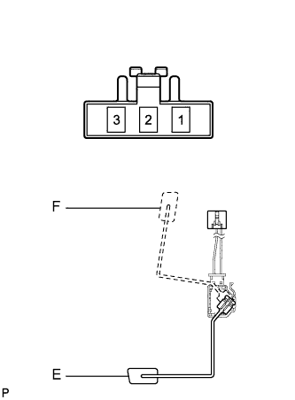
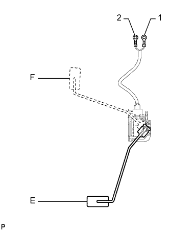

ДАТЧИК УРОВНЯ ТОПЛИВА В СБОРЕ (для моделей с двойным баком) > ПРОВЕРКА |
| 1. ПРОВЕРЬТЕ ДАТЧИК УРОВНЯ ТОПЛИВА В СБОРЕ (для главного топливного бака) |
|  |
Убедитесь, что поплавок плавно перемещается между положениями F и E.
Измерьте сопротивление в соответствии со значениями, приведенными в таблице ниже.
| Контакты для подключения диагностического прибора | Состояние | Заданные условия |
| 2 - 3 | Поплавок на отметке F (сверху) | 12 - 18 Ом |
| Поплавок на отметке E (нижняя) | 405 - 415 Ом |
| 2. ПРОВЕРЬТЕ ДАТЧИК УРОВНЯ ТОПЛИВА В СБОРЕ (для расширительного топливного бачка) |
|  |
Убедитесь, что поплавок плавно перемещается между положениями F и E.
Измерьте сопротивление в соответствии со значениями, приведенными в таблице ниже.
| Контакты для подключения диагностического прибора | Условие | Заданные условия |
| 1 - 2 | Поплавок на отметке F (сверху) | 12 - 18 Ом |
| Поплавок на отметке E (нижняя) | 405 - 415 Ом |